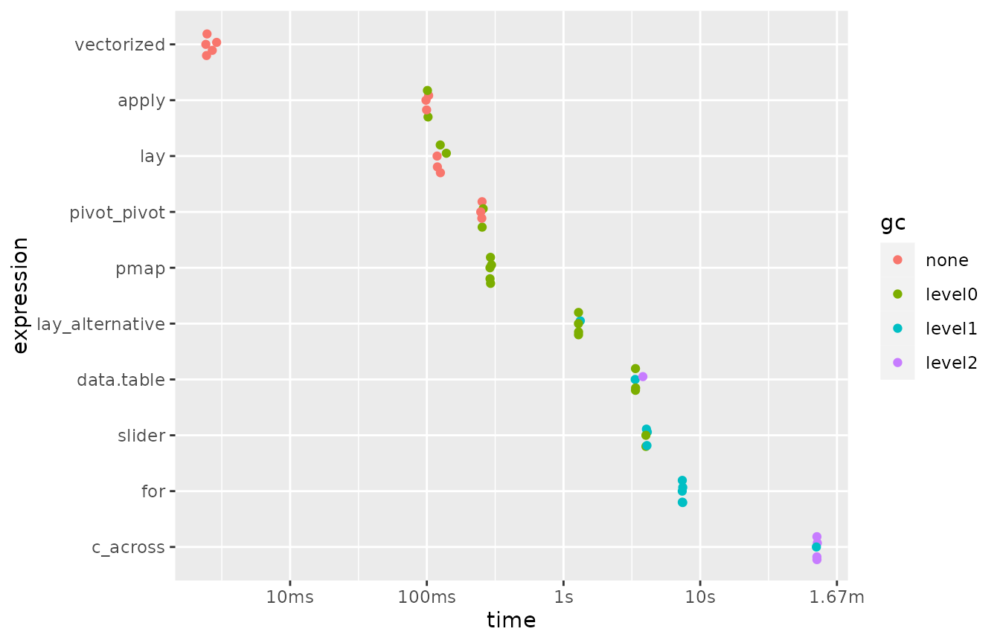
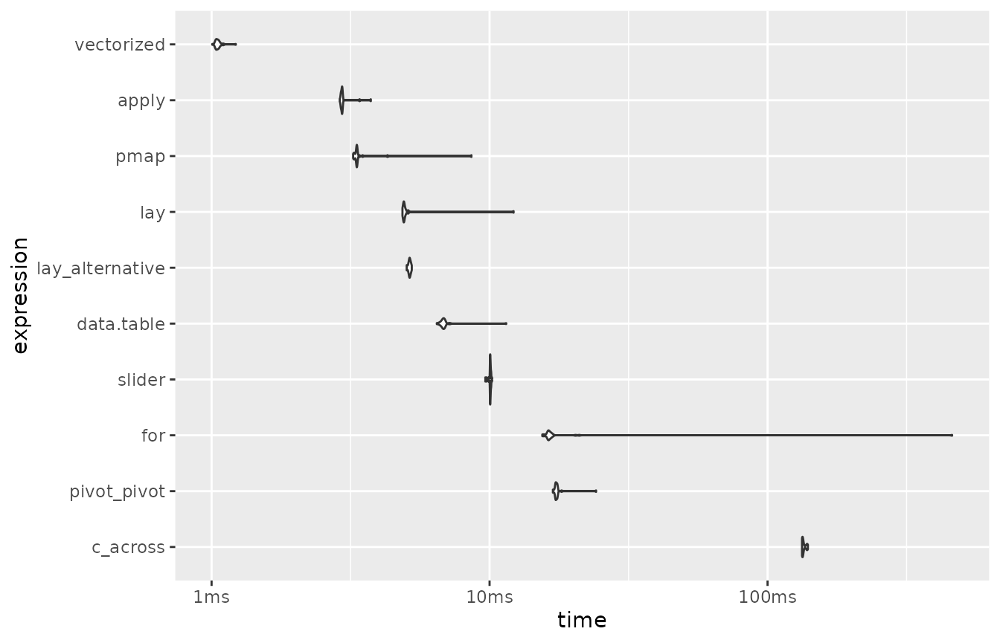

Benchmarking alternative implementations for rowwise jobs
Source:vignettes/benchmark.Rmd
benchmark.RmdVignette overview
The goal of this vignette is to compare the performances of
lay() to alternatives. As you will see, the code using
lay() is both simple and efficient. The only alternative
that is clearly more efficient is the one labelled below
“vectorized”. Unfortunately, such a vectorized approach imply
to refer explicitly to all column names which data are used.
Furthermore, such a vectorized approach is not applicable generally, as
it can only deal with logical and arithmetic operators and does allow
the use of other types of functions.
Loading packages
This vignette requires you to load the following packages:
library(dplyr) ## for many things
library(lay) ## for lay() and the data
library(tidyr) ## for pivot_longer() and pivot_wider()
library(purrr) ## for pmap_lgl()
library(slider) ## for slide()
library(data.table) ## for an alternative to base and dplyr
library(bench) ## for running the benchmark
library(forcats) ## for sorting levels in benchmark plot with fct_reorder()Please install them if they are not present on your system.
An example of a rowwise task
Consider the dataset drugs_full from our package
{lay}:
drugs_full
#> # A tibble: 55,271 × 8
#> caseid hydrocd oxycodp codeine tramadl morphin methdon vicolor
#> <chr> <int> <int> <int> <int> <int> <int> <int>
#> 1 1 0 0 0 0 0 0 0
#> 2 2 0 0 0 0 0 0 0
#> 3 3 0 0 0 0 0 0 0
#> 4 4 0 0 0 0 0 0 0
#> 5 5 0 0 0 0 0 0 0
#> 6 6 0 0 0 0 0 0 0
#> 7 7 0 0 0 0 0 0 0
#> 8 8 0 0 0 0 0 0 0
#> 9 9 0 0 0 0 0 0 1
#> 10 10 0 0 0 0 0 0 0
#> # ℹ 55,261 more rowsIn this dataset, all columns but caseid record the use
of pain relievers for non medical purpose.
For each drug there is a certain number of users and non-users:
drugs_full |>
pivot_longer(-caseid, names_to = "drug", values_to = "used") |>
count(drug, used) |>
mutate(used = if_else(used == 1, "have_used", "have_not_used")) |>
pivot_wider(names_from = used, values_from = n)
#> # A tibble: 7 × 3
#> drug have_not_used have_used
#> <chr> <int> <int>
#> 1 codeine 53642 1629
#> 2 hydrocd 52633 2638
#> 3 methdon 54685 586
#> 4 morphin 54326 945
#> 5 oxycodp 51461 3810
#> 6 tramadl 54480 791
#> 7 vicolor 50358 4913In this vignette, we will compare the efficiency of alternative ways
to create a new variable named everused which will indicate
if each respondent as used any of the considered pain relievers for non
medical purpose or not.
Benchmark
Let’s compare the running time of different methods to do this job:
drugs_full_dt <- data.table(drugs_full) ## coercion to data.table
benchmark1 <- mark(
vectorized = {
drugs_full |>
mutate(everused = codeine | hydrocd | methdon | morphin | oxycodp | tramadl | vicolor)},
lay = {
drugs_full |>
select(-caseid) |>
mutate(everused = lay(pick(everything()), any))},
lay_alternative = {
drugs_full |>
mutate(everused = lay(pick(-caseid), any, .method = "tidy"))},
c_across = {
drugs_full |>
rowwise() |>
mutate(everused = any(c_across(-caseid))) |>
ungroup()},
pivot_pivot = {
drugs_full |>
pivot_longer(-caseid) |>
group_by(caseid) |>
mutate(everused = any(value)) |>
ungroup() |>
pivot_wider()},
pmap = {
drugs_full |>
mutate(everused = pmap_lgl(pick(-caseid), ~ any(...)))},
slider = {
drugs_full |>
mutate(everused = slide_vec(pick(-caseid), any))},
data.table = {
drugs_full_dt[, ..I := .I]
drugs_full_dt[, everused := any(.SD), by = ..I, .SDcols = -"caseid"]},
apply = {
drugs_full |>
mutate(everused = apply(pick(-caseid), 1, any))},
'for' = {
everused <- logical(nrow(drugs_full))
columns_in <- colnames(drugs_full) != "caseid"
for (i in seq_len(nrow(drugs_full))) everused[i] <- any(drugs_full[i, columns_in])},
iterations = 5,
time_unit = "ms",
check = FALSE
)
#> Warning: Some expressions had a GC in every iteration; so filtering is
#> disabled.Here are the results of this first benchmark:
benchmark1 |>
arrange(median)
#> # A tibble: 10 × 6
#> expression min median `itr/sec` mem_alloc `gc/sec`
#> <bch:expr> <dbl> <dbl> <dbl> <bch:byt> <dbl>
#> 1 vectorized 2.64 2.80 349. 2.74MB 0
#> 2 apply 111. 111. 8.94 4.01MB 1.79
#> 3 lay 133. 137. 7.04 5.49MB 2.82
#> 4 pivot_pivot 303. 315. 3.19 62.38MB 1.28
#> 5 pmap 379. 381. 2.50 251.29KB 2.00
#> 6 lay_alternative 1473. 1507. 0.660 15.3MB 2.51
#> 7 data.table 3838. 3877. 0.257 3.04MB 1.80
#> 8 slider 4579. 4671. 0.214 915.15KB 1.80
#> 9 for 8934. 9047. 0.109 271.48KB 1.97
#> 10 c_across 89896. 90851. 0.0110 424.32MB 0.984
benchmark1 |>
mutate(expression = fct_reorder(as.character(expression), median, .desc = TRUE)) |>
plot()
Note that the x-axis of the plot is on a logarithmic scale.
Benchmark on smaller dataset
Let’s repeat our benchmark using a smaller dataset:
drugs_dt <- data.table(drugs) ## coercion to data.table
benchmark2 <- mark(
vectorized = {
drugs |>
mutate(everused = codeine | hydrocd | methdon | morphin | oxycodp | tramadl | vicolor)},
lay = {
drugs |>
select(-caseid) |>
mutate(everused = lay(pick(everything()), any))},
lay_alternative = {
drugs |>
mutate(everused = lay(pick(-caseid), any, .method = "tidy"))},
c_across = {
drugs |>
rowwise() |>
mutate(everused = any(c_across(-caseid))) |>
ungroup()},
pivot_pivot = {
drugs |>
pivot_longer(-caseid) |>
group_by(caseid) |>
mutate(everused = any(value)) |>
ungroup() |>
pivot_wider()},
pmap = {
drugs |>
mutate(everused = pmap_lgl(pick(-caseid), ~ any(...)))},
slider = {
drugs |>
mutate(everused = slide_vec(pick(-caseid), any))},
data.table = {
drugs_dt[, ..I := .I]
drugs_dt[, everused := any(.SD), by = ..I, .SDcols = -"caseid"]},
apply = {
drugs |>
mutate(everused = apply(pick(-caseid), 1, any))},
'for' = {
everused <- logical(nrow(drugs))
columns_in <- colnames(drugs) != "caseid"
for (i in seq_len(nrow(drugs))) everused[i] <- any(drugs[i, columns_in])},
iterations = 30,
time_unit = "ms",
check = FALSE
)Here are the results of this second benchmark:
benchmark2 |>
arrange(median)
#> # A tibble: 10 × 6
#> expression min median `itr/sec` mem_alloc `gc/sec`
#> <bch:expr> <dbl> <dbl> <dbl> <bch:byt> <dbl>
#> 1 vectorized 1.25 1.29 766. 7.33KB 0
#> 2 apply 3.28 3.43 288. 16.92KB 9.92
#> 3 pmap 4.02 4.14 241. 9.91KB 0
#> 4 lay 5.54 5.82 172. 27.12KB 5.93
#> 5 lay_alternative 5.90 6.04 165. 38.05KB 0
#> 6 data.table 7.91 8.12 123. 67.66KB 0
#> 7 slider 10.6 11.4 87.5 11.18KB 3.02
#> 8 for 19.1 20.2 49.3 17.74KB 1.70
#> 9 pivot_pivot 20.8 21.4 46.7 189.23KB 1.61
#> 10 c_across 166. 171. 5.82 794.53KB 1.45
benchmark2 |>
mutate(expression = fct_reorder(as.character(expression), median, .desc = TRUE)) |>
plot(type = "violin")
Note that the x-axis of the plot is on a logarithmic scale.
Benchmark environment
sessionInfo()
#> R version 4.3.1 (2023-06-16)
#> Platform: x86_64-pc-linux-gnu (64-bit)
#> Running under: Ubuntu 22.04.3 LTS
#>
#> Matrix products: default
#> BLAS: /usr/lib/x86_64-linux-gnu/openblas-pthread/libblas.so.3
#> LAPACK: /usr/lib/x86_64-linux-gnu/openblas-pthread/libopenblasp-r0.3.20.so; LAPACK version 3.10.0
#>
#> locale:
#> [1] LC_CTYPE=C.UTF-8 LC_NUMERIC=C LC_TIME=C.UTF-8
#> [4] LC_COLLATE=C.UTF-8 LC_MONETARY=C.UTF-8 LC_MESSAGES=C.UTF-8
#> [7] LC_PAPER=C.UTF-8 LC_NAME=C LC_ADDRESS=C
#> [10] LC_TELEPHONE=C LC_MEASUREMENT=C.UTF-8 LC_IDENTIFICATION=C
#>
#> time zone: UTC
#> tzcode source: system (glibc)
#>
#> attached base packages:
#> [1] stats graphics grDevices utils datasets methods base
#>
#> other attached packages:
#> [1] forcats_1.0.0 bench_1.1.3 data.table_1.14.8 slider_0.3.1
#> [5] purrr_1.0.2 tidyr_1.3.0 lay_0.1.0 dplyr_1.1.3
#>
#> loaded via a namespace (and not attached):
#> [1] sass_0.4.7 utf8_1.2.4 generics_0.1.3 stringi_1.7.12
#> [5] digest_0.6.33 magrittr_2.0.3 evaluate_0.22 grid_4.3.1
#> [9] fastmap_1.1.1 rprojroot_2.0.3 jsonlite_1.8.7 fansi_1.0.5
#> [13] scales_1.2.1 textshaping_0.3.7 jquerylib_0.1.4 cli_3.6.1
#> [17] rlang_1.1.1 munsell_0.5.0 withr_2.5.1 cachem_1.0.8
#> [21] yaml_2.3.7 ggbeeswarm_0.7.2 tools_4.3.1 memoise_2.0.1
#> [25] colorspace_2.1-0 ggplot2_3.4.4 profmem_0.6.0 vctrs_0.6.4
#> [29] R6_2.5.1 lifecycle_1.0.3 stringr_1.5.0 fs_1.6.3
#> [33] vipor_0.4.5 ragg_1.2.6 beeswarm_0.4.0 pkgconfig_2.0.3
#> [37] desc_1.4.2 warp_0.2.0 pkgdown_2.0.7 pillar_1.9.0
#> [41] bslib_0.5.1 gtable_0.3.4 glue_1.6.2 systemfonts_1.0.5
#> [45] xfun_0.40 tibble_3.2.1 tidyselect_1.2.0 knitr_1.44
#> [49] farver_2.1.1 htmltools_0.5.6.1 rmarkdown_2.25 compiler_4.3.1